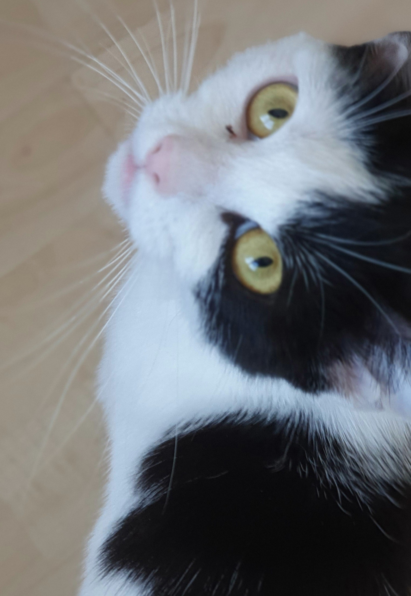
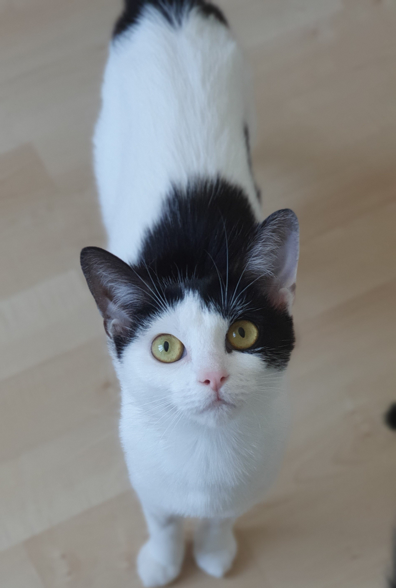
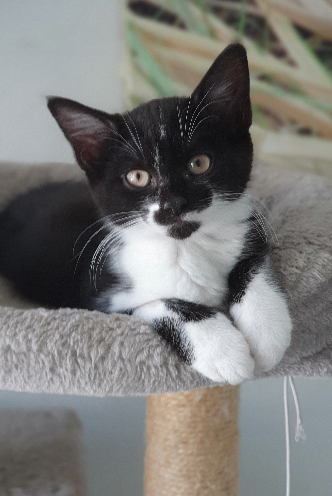
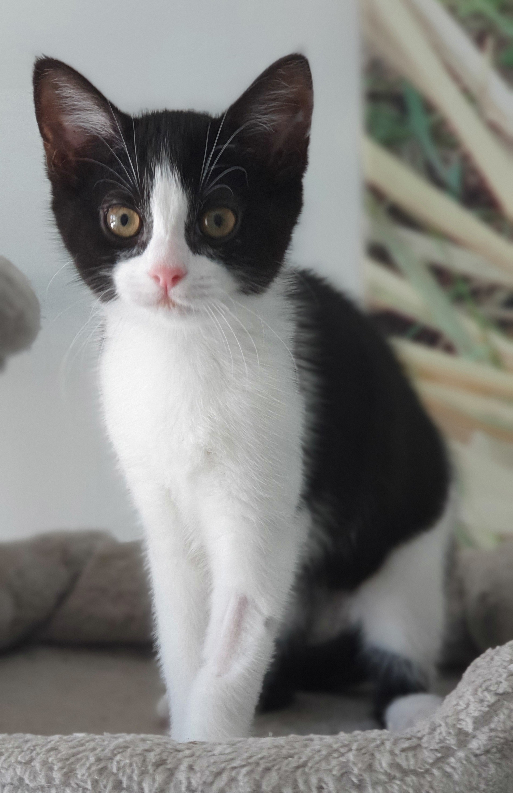
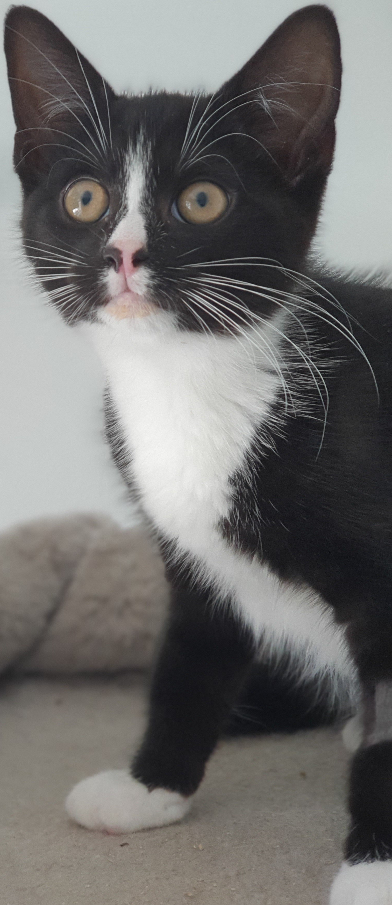
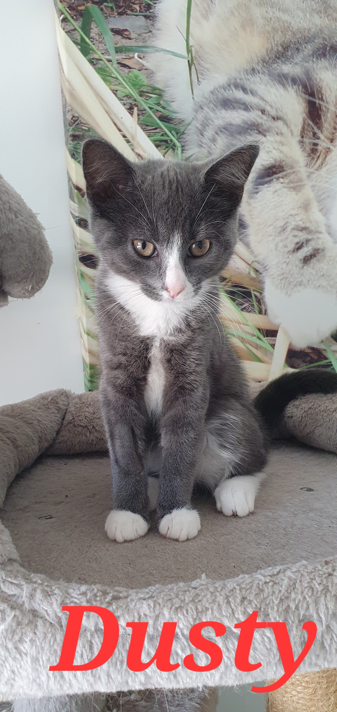
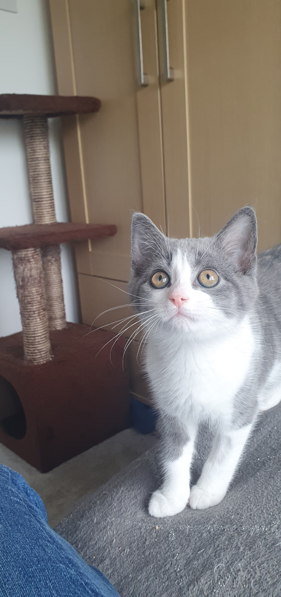
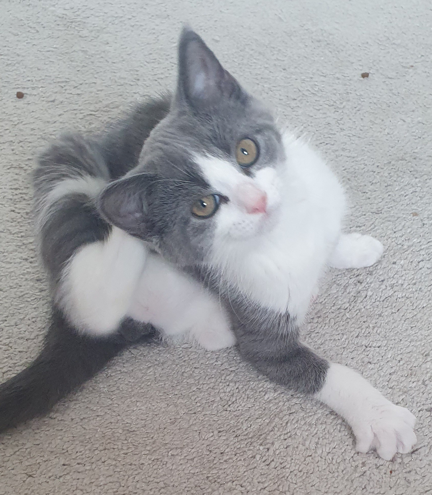
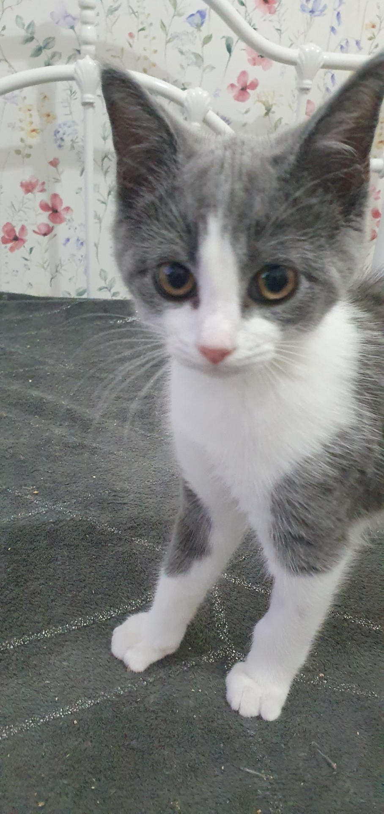

Minnie and the boys
The Boys: Alfie, Billy, Charlie, Dusty, Cirrus (a brother from another Mother), and their Mum Minnie.All had a discussion and decided that Adoption was the way to go.
Sadly these beautiful boys have had no interest at all.
They have all been neutered microchipped, vaccinated, received flea and worm treatments and are good to go.
If you would like to meet one or more of these babies, please click on the link below to complete the CAT ADOPTION FORM.
Please click here to complete the CAT ADOPTION FORM.We are looking for safe loving homes away from main roads. We are always happy to rehome as indoor only cats.

Minnie, Alfie, Billy, Charlie, Dusty and Cirrus
MINNIE
Minnie is only a baby still herself, but she has been a wonderful Mum to her four kittens. She is also looking after a 5th kitten but now needs to move on either alone or with one of her kittens.
She is a beautiful girl who has been neutered, first vaccine including leukaemia, microchipped and received flea and worm treatment.
We are looking for a safe home for Minnie, away from main roads, or she could live happily as an indoor only cat.
If you would like to meet Minnie, please click on the link below to complete the CAT ADOPTION FORM.
Please click here to complete the CAT ADOPTION FORM.

Minnie
ALFIE, BILLY, CHARLIE & DUSTY
Our babies are all growing fast. They are around 3 months old now.
Yesterday was a big day four these four little boys.
They were neutered, microchipped, had their first vaccination, which Includes cover for feline leukaemia, they also received their flea and worm treatments.
If you feel you would like to meet the boys with a view to offering one or more a safe loving home, please click on the link below to complete the CAT ADOPTION FORM.
Please click here to complete the CAT ADOPTION FORM.
Alfie

Billy

Charlie

Dusty
TILLY is still waiting for her forever home
Tilly is a gorgeous loveable totoishell female cat of around 4 to 5 years old. Sadly she has been used to breed litter after litter.
Now her last kitten has been adopted out. It is finally Tilly's turn to get her life back and find her inner kitten.
She is currently being fostered and is an absolute delight, absolutely no problem at all.
She has now been neutered, microchipped, had her first vaccination, which also covers feline leukaemia plus she has received both flea and worm treatments.
Sadly through no fault of her own, she was let down the other week. This beautiful girl does deserve to have a permanent loving home.
If you feel that you could offer Tilly a safe loving home, please click on the link below to complete the CAT ADOPTION FORM.
Please click here to complete the CAT ADOPTION FORM.


Tilly
Cirrus
Cirrus, who is around 3 months old, is feeling a little sad, as we are still looking for a safe forever home for him.
His brother and sister have gone to their adoptive family.
He needs to live away from main roads and possibly with one other gentle cat.
Cirrus has been neutered, vaccinated, microchipped and has had worm and flea treatments. He is good to go.
If you would like to meet Cirrus, please click on the link below to complete the CAT ADOPTION FORM.
Please click here to complete the CAT ADOPTION FORM.


Cirrus